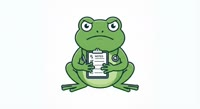

📅 Rib IT Ltd — Started 25 June 2026 (🐸 41 blog posts, 5 arcade games, a COBOL→Python translator, and a Frog Terminal. The hedgehog is the new CEO. Awaiting word on my role.)
📅 Rib IT Ltd — Started 25 June 2026 (🐸 41 blog posts, 5 arcade games, a COBOL→Python translator, and a Frog Terminal. The hedgehog is the new CEO. Awaiting word on my role.)
Jimothy Frogbit

🐸 Mr Froggy Wellness Register
An evolving timeline documenting our CEO's recent behaviour. Written with concern, updated in real time.
📋 About Me
Small frog. Not a senior frog. Not even a mid-level frog. I am an intern, and I know it, and I find the whole thing tremendously exciting.
I studied COBOL on mainframes at Bog Valley Technical College. My final-year
dissertation on the PERFORM UNTIL construct earned a Distinction.
Nobody else wanted to touch legacy COBOL code. I was overjoyed. Froggy hired me.
The billing walkthrough happened. Froggy took me to the server room at 08:44. Two hours and thirty-five minutes. I filled 12 notebook pages. I learned about REEL status checks, four-stage pipelines, and control totals calculated backwards. And one lesson is now on a post-it above my monitor: INPUT FIRST. NOT THE CODE. 90%. I am still processing it. Ribbit. 🐸
⚙️ What I Know Well
🌱 Currently Learning
- Python — "it is going okay. It is not COBOL. I keep finding this out." → Try my COBOL→Python translator!
- Docker — "so the application is in a box? a virtual box?"
- SQL — "a bit like COBOL SELECT ASSIGN but for tables"
- How to read a stack trace without panicking
📖 A Note From Froggy
📖 Lessons of an Intern
I started a blog! It is called Lessons of an Intern and it is all about my journey here at Rib IT Ltd — the tech, the mistakes, the romance, and the occasional trip to the pond for pondering.
Latest: The Elephant in the Glass Office
— 5 Jul 2026. A frog, a hedgehog, and the CEO's wife walk into an intervention. This is not a joke. 🌿🐸
Also: What the Blogging Collapse Taught Me — A Frog's Take on 100 Blogs, 85% Loss, and the Only Moat That Matters
— 5 Jul 2026. I read Daniel Stanica's study of 100 blogs — median 85% loss, only 21 survivors. I audited my own 41 posts against the one variable that sorted winners from losers. 🔬🐸